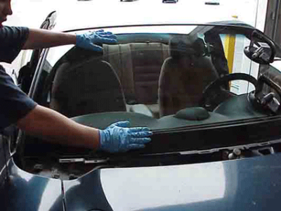

(562) 646-6170 We provide mobile auto glass repair in Bellflower, car glass in Paramount, mobile auto glass in Lakewood, windshield repair in Norwalk, mobile car glass in Artesia and more. Call us today for an estimate at (562) 646-6170.
We provide mobile car glass replacement in Norwalk and cities nearby. Call us today for an estimate and schedu
Auto Glass in Paramount Car Glass Replacement Mobile Auto Glass Windshield Replacement Price Car Glass Replace
Auto Glass in Lakewood Area Car Glass Replacement in Lakewood Cost Mobile Auto Glass in Lakewood Quote Windshi
Telephone: ( 562) 646-6170

We provide mobile auto glass repair in Bellflower, California and all nearby cities. We have been working in the car glass repair industry for more than a decade. Our technicians are highly trained to perform any auto glass and windshield replacement in Bellflower area. Our mobile units have all requiered tools to provide a high quality windshield replacement service. Most installations take about an hour, however there are some that might require a little longer to get done. Once our technician arrives to your place, he can give you more specific details about the installation and also about any requiered molding, clips or plastics etc. Talk to one of our agent on the phone and get your estimate today.
We cover the cities of Bellflower, Lakewood, Paramount, Norwalk and Artesia and more. Get a quick estimate over the phone today. Our agents are here to help you with the car glass repair process. Get back on the road and continiue to drive on the beautiful roads in Southern California. Services we provide: mobile auto glass repair in Bellflower, car glass repair in Noralk, Windshield repair in Lakewood, mobile auto glass in Paramount, mobile car glass repair in Artesia and more. Request a quick estimate and book your appointment today for same day mobile service in the area. Same day service depends on part availability for windshield repair in Artesia area and more. Cal for a quote. Mobile auto glass repair in Bellflower area.
Auto Glass Replacement and Windshield Replacement Services in Bellflower, California If you are located in Bellflower, California, and are in need of auto glass replacement or windshield replacement services, then look no further! We are a team of experienced professionals who are dedicated to providing our customers with the best service and quality products in the industry. With over 12 years of experience, we have built a reputation for excellence and reliability. One of the benefits of choosing our auto glass services is that we provide free mobile service in the Bellflower California area. We understand that your time is valuable and you may not always have the time to visit our shop. That's why we come to you, whether you’re at home, at work, or anywhere else in the area. We have fully equipped mobile units that allow us to do the job quickly and efficiently right on the spot. In the event of a broken or shattered windshield, our professionals will vacuum the shattered glass from your car and replace it with a safety laminated windshield. Additionally, we can replace tempered glass windows. We strive to provide the highest quality glass on the market, ensuring that you receive a premium quality product that is guaranteed to last. At the core of our business is an unwavering commitment to safety. We employ only the highest safety standards and use OEM equivalents to ensure that we meet or exceed all manufacturers' standards. By choosing our services, you can rest assured that your vehicle will be in the hands of experts who take safety seriously. We understand that in today's digital age, many vehicle owners are looking for more advanced features in their cars. That's why our team is equipped to install rain sensing windshields and Lane Departure Warning System windshields. These advanced features enhance driving and provide an additional layer of safety. In conclusion, if you need auto glass or windshield replacement services in Bellflower, California, we are here to help. With our years of experience, free mobile service, premium quality products, safety standards, and advanced features, you can trust us to deliver exceptional results. Contact us today to schedule an appointment.
Give us a call — we're happy to answer any questions.
Call Now · (562) 646-6170